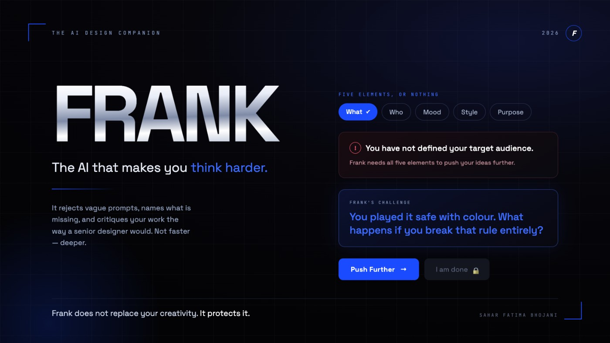
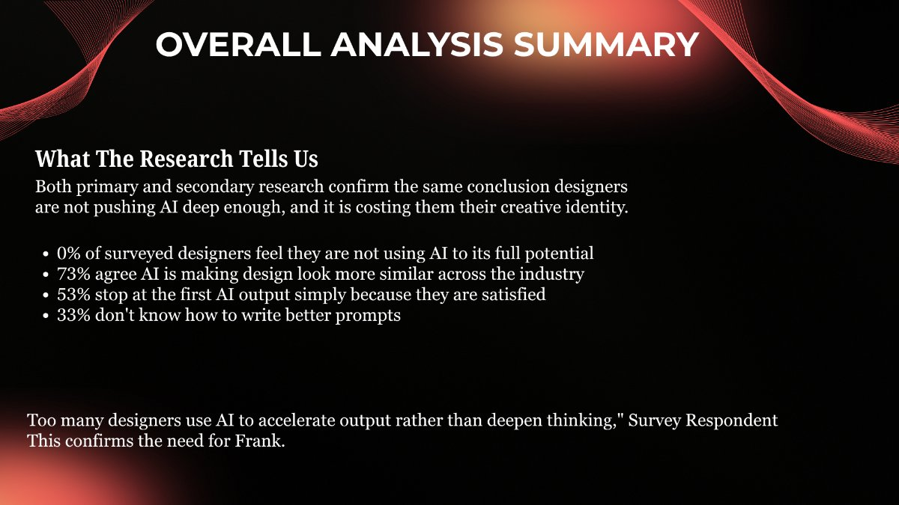
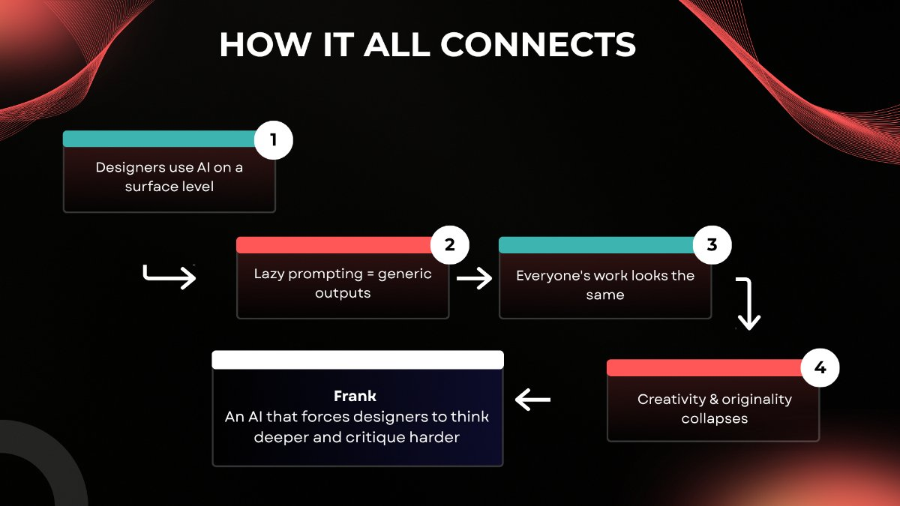

Frank
An AI design companion that refuses to be a shortcut. Frank pushes you harder while you ideate, then critiques your finished work the way a senior designer actually would.
The name is the argument: frank — direct, unsoftened, to the point. Every interaction pattern in the product is designed to earn that word.

Everyone's work is starting to look the same
AI is now standard in the designer's workflow, but the same tools used the same shallow way produce a monoculture. The failure is not the model — it is the interaction: one-line prompts, first output accepted, no critical loop anywhere in the process.
So the design question stopped being what can AI generate and became what should AI refuse to give you.
Designers already know
A survey of design students and working designers, plus published studies and industry reporting. Both halves landed on the same conclusion.


“Too many designers use AI to accelerate output rather than deepen thinking.”
Two halves, one refusal
Frank does not replace your creativity. It protects it — by making shortcuts structurally unavailable.
{{ p.t }}
One question at registration — student or professional — reshapes how hard Frank pushes for the rest of the experience.
Four screens that argue back
Built as an interactive Figma prototype. Electric blue is reserved for one thing only: the moment Frank demands something of you.
Does friction actually work?
This was the decision I had to defend all year. Every usability instinct I had been taught says remove friction — and Frank deliberately adds it. Locked exports. Mandatory iteration rounds. A submit button that stays disabled until you have said who the work is for.
So the friction had to be legible, never punitive. Frank always names exactly what is missing, shows how many rounds remain, and phrases a block as a question rather than an error. Testing with students and working designers is what separated the two: people tolerated being pushed as long as they understood why, and abandoned the flow the moment a refusal felt arbitrary.
I still hold it as an open question rather than a proven one — which is, honestly, the most useful thing the project taught me.
My role in a team of four
14 weeks · exhibition deliveryThe concept came from our team lead. I owned the research, the interaction model and the entire prototype — turning “an AI that pushes back” from a sentence into a set of screens that behave that way, and defending each refusal in critique.